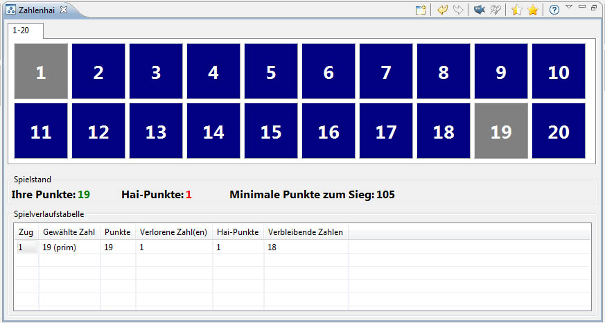
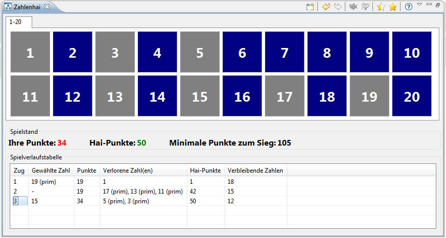
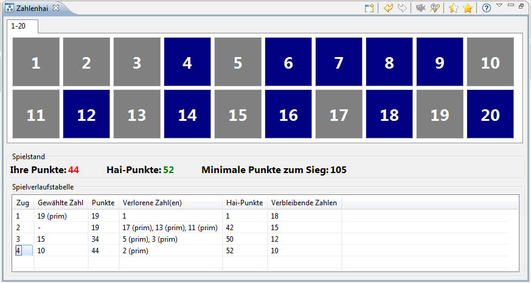
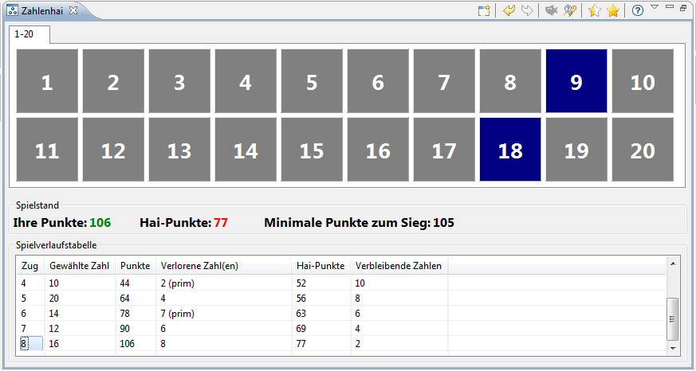
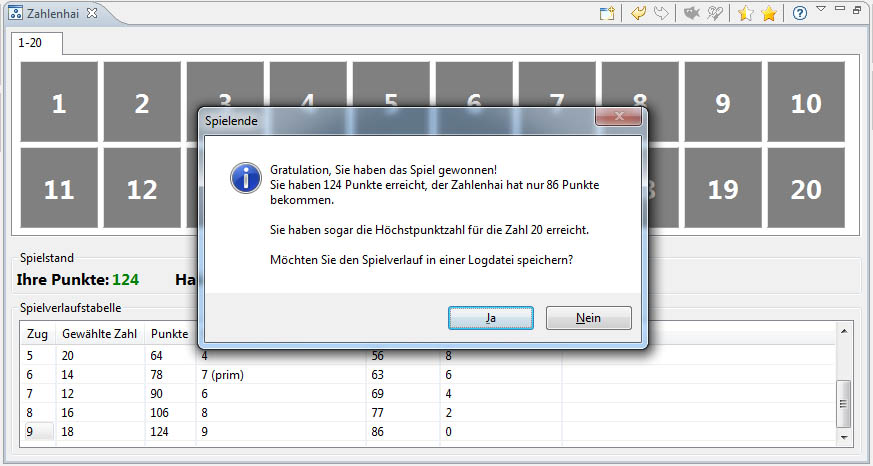

) gedrückt wurde. Alle aus dem Spiel genommenen Zahlen sind nun grau und nicht mehr aktiv.
) gedrückt wurde. Alle aus dem Spiel genommenen Zahlen sind nun grau und nicht mehr aktiv.Wer mehr über Teiler von Zahlen und Primzahlen lernen will, der sollte das Zahlenhai Spiel spielen. Die vorliegende Anleitung basiert auf einem Zahlenfeld von 1 bis 20 (per Parameter kann das Zahlenfeld geändert werden). Das Spiel scheint für ein kleines Zahlenfeld einfach zu sein, es ist allerdings eine große Herausforderung für ein großes Zahlenfeld.
Die Spielidee besteht darin soviele Zahlen wie möglich aus einem gegebenen Zahlenfeld zu gewinnen. Die Summe der gewonnenen Zahlen sollte größer sein als die Summe der Zahlen des Zahlenhais und möglichst nahe an der maximal erreichbaren Summe für das gegebene Zahlenfeld liegen. Man spricht in dem Zusammenhang anstatt von der maximalen Summe auch von dem optimalen Ergebnis des Zahlenfeldes. Hat man eine beliebige Zahl ausgewählt, so frisst der Zahlenhai alle echten Teiler dieser Zahl (z.B. alle echten Teiler von 6 sind 1, 2 und 3). Das Spiel endet, wenn alle Zahlen ausgewählt oder vom Zahlenhai gefressen wurden.
Das Spiel startet mit dem folgenden Fenster. Das Zahlenfeld ist hier auf 20 gesetzt, dazu klicke auf den Button "Neues Spiel" und stelle 20 ein. Der Zahlenhai frisst ja alle echten, freien Teiler deiner ausgewählten Zahl. Hat die Zahl keine echten, freien Teiler mehr, frisst er deine ausgewählte Zahl selbst. Versuche die Anzahl der gefressenen Zahlen auf ein Minimum von 1 oder 2 zu beschränken. Um ein optimales Ergebnis zu erzielen, musst du als erste Zahl immer die größte verfügbare Primzahl auswählen, also für das Zahlenfeld 1 bis 20 ist das die 19. Diese hat nur die 1 als echten Teiler. Du kannst nun die Zahl 19 im Zahlenfeld Auswahlbereich anklicken.
Nachdem du die 19 angewählst hast, frisst der Zahlenhai die 1. Außerdem werden die Zahlen grau. Beide Zahlen sind nun raus aus dem Spiel und nicht mehr aktiv oder frei.
In der detailierten Punkteübersicht (die untere Tabelle des letzten Bildes) werden deine Züge dokumentiert. Neben der Zugnummer, deiner ausgewählten Nummer, deinem aktuellen Punktestand werden die Zahlen, die an den Zahlenhai gehen, als auch sein aktueller Punktestand angezeigt. Dein Punktestand ist in grün dargestellt, die Punkte des Zahlenhais sind rot, da du mit dem aktuellen Stand vorne liegst. Zusätzlich gibt es noch die Information über die Summe, die mindestens erreicht werden muss, um zu gewinnen.
Während des Spiels kann es passieren, dass Zahlen übrig bleiben, die keine
freien Teiler mehr haben, aber selbst auch nicht freie Teiler für andere Zahlen
sind. Diese Zahlen können nicht mehr zu deinem Punktekonto beitragen.
Im Falle einer solchen Situation, wird der Knopf "Haifutter" aktiv dargestellt.
Durch Drücken des Knopfes
kannst du diese Zahlen sofort aus dem Spiel nehmen (Futter für den Hai).
Es wird empfohlen dieses auch zu tun. Man bekommt einfach einen besseren Überblick
über die wirklich interessanten Zahlen. Das folgende Bild zeigt nun den Stand, nachdem der Knopf "Haifutter"
() gedrückt wurde. Alle aus dem Spiel genommenen Zahlen sind nun grau und nicht mehr aktiv.

Nach dem ersten Zug sind die weiteren Züge etwas schwieriger. Du solltest versuchen dem Zahlenhai so wenig Zahlen wie möglich übrig zu lassen. Am Besten nur einen Teiler, manchmal auch zwei Teiler. Aber wähle nicht zu kleine Zahlen aus die nur einen Teiler haben, da diese unter Umständen als Teiler für größere Zahlen benötigt werden. Für den zweiten Zug ist es empfehlenswert entweder 15=3*5, 14=2*7 oder 10=2*5 zu wählen. Das folgende Bild zeigt nun den Stand des Spiels, nach dem 15 ausgewählt wurde.
Wenn du mit der Maus über ein aktives Feld, z.B. das der Zahl 10 fährst, wird dir ein Tooltip angezeigt, der Hilfe leistet. Die Hilfestellung zeigt dir die noch verfügbaren, freien Teiler der Zahl 10. Es ist für die 10 nur noch 2 aktiv. Wir werden nun die 10 als nächste Zahl auswählen.
Du kannst noch mehr Hinweise bekommen, wenn du mit der Maus auf den Knopf
"Hinweis"  klickst. Es wird empfohlen als nächstes die 20 anzuklicken.
Hier folgen wir nun der Empfehlung und drücken "Ja". Hinweis: Es wird immer ein Vorschlag für eine Zahl gegeben, die zur optimalen Zugfolge führt, daher ist in manchen Fällen kein Hinweis möglich.
klickst. Es wird empfohlen als nächstes die 20 anzuklicken.
Hier folgen wir nun der Empfehlung und drücken "Ja". Hinweis: Es wird immer ein Vorschlag für eine Zahl gegeben, die zur optimalen Zugfolge führt, daher ist in manchen Fällen kein Hinweis möglich.
Für die nächsten Züge kannst du z.B. die freien Zahlen in der Reihenfolge 16, 12 und 14 auswählen. Alle Zahlen haben nur noch einen Teiler, die aber alle unterschiedlich sind. Wenn du deine letzte Entscheidung z.B. nach Drücken der 12 revidieren möchtest, kannst du den Knopf "Zurück" benutzen.
Die Situation nach Auswahl von 14, 12 und 16 zeigt das folgende Bild.
Die letzten verbleibenden Zahlen sind nun die 18 und die 9. Bitte drücke nun die 18 und das Spiel ist vorbei. Das folgende Bild zeigt die entsprechende Situation. Glückwunsch, du hast das Spiel gewonnen. Du hast sogar ein optimales Ergebnis erreicht. Du konntest die Zahlen 16, 14 und 12 in einer bliebigen Reihenfolge nehmen, die optimale Zugfolge ist also nicht eindeutig. Es wird dir außerdem vorgeschlagen, den aktuellen Spielverlauf in einer Logdatei(.csv) zu speichern. Dann wird die Spielverlaufstabelle exportiert und kann z.B. in Excel geöffnet werden.
Wenn du ein neues Spiel starten willst, drücke einfach den Knopf "Neues Spiel".